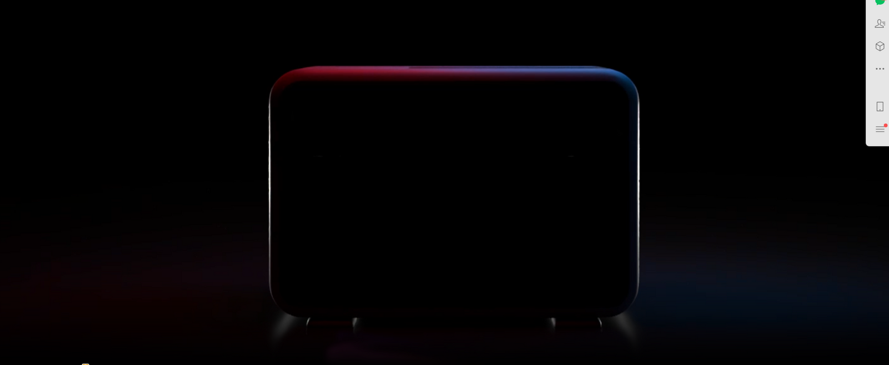
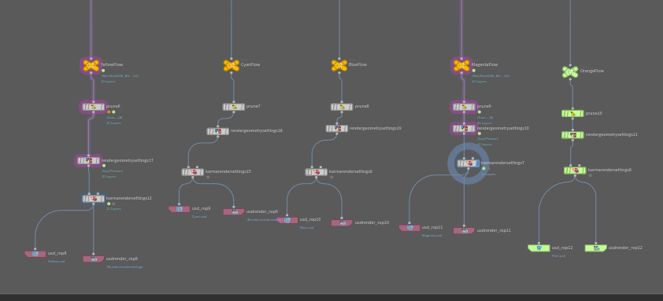
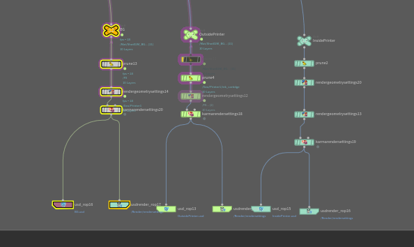

Week9
Team Member
Yiqi Zheng (Fx)
Riley Ho (Fx)
Itim Kongsakulvatanasook (Fx)
Sofia Mancias (Compositing)
Mar 2
Benji Hopkins (Look Dev)
SCAD X HARBOR X ETC - Week 9
Hello, this is my ninth week of the Scad x Harbor x ETC blog!
These are the mentors' feedback from Tuesday's presentation.
Kyle:
-
Shot 1 particles too saturated?
-
Ground and printer looks awesome
-
Shot 2, less saturated
-
Depth of field and motion blur is missing
-
Be more mysterious and hide some stuff
-
Shot 3 depth of field can also be tightened, it will help hide the low res on the painting
-
Not sure about the warm light in last shot, maybe more blue
Beck：
-
Wood is very bright
-
Soften the bump on the wood
-
Should not be that dark, makes it look CG
-
Where you cut is important, so particles are not fully faded away in shot 3 and then finish in shot 4
Pheya:
-
The spill on on first shot is not the same as the second shot
-
Spill is more on first shot than the second shot, but second shot is more macro?
-
Wood is better but still very smooth
-
Looks more like plastic
Molly:
-
Would be cool to see hints of particles in last shot, maybe fog
-
Watch out for flickering in the backgrounds
-
Shot 3 and 4 camera move feels the same, should feel more like progression
Molly:
-
Kill the orange in last shot, switch it for a cooler light, and bring all the lights down by 10%
To-Do List:
-
Render high-res still image, and make a breakdown and final video
This is our Previs for week 9.
This week for Shot 1, I focused on refining the outer particles to better integrate them with the colorful flows. However, the result wasn’t visually strong, so we decided to remove them to create a cleaner composition.

For Shot 2, I refined the color flows to reduce the flat appearance and introduced more volumetric depth to enhance the three-dimensional feel, particularly in the pink and magenta areas, which initially appeared quite flat.


Render:
For Shot 1, we separated it into nine layers so Sofia could have more control over the ground shadows during color grading.



For the rendering part, we separated Shot 2 into nine layers to give Sofia more control during color grading. I also rendered the printer’s ink slots separately and enhanced their color so they wouldn’t look like black holes or feel disconnected from the rest of the scene.

